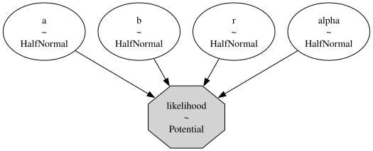
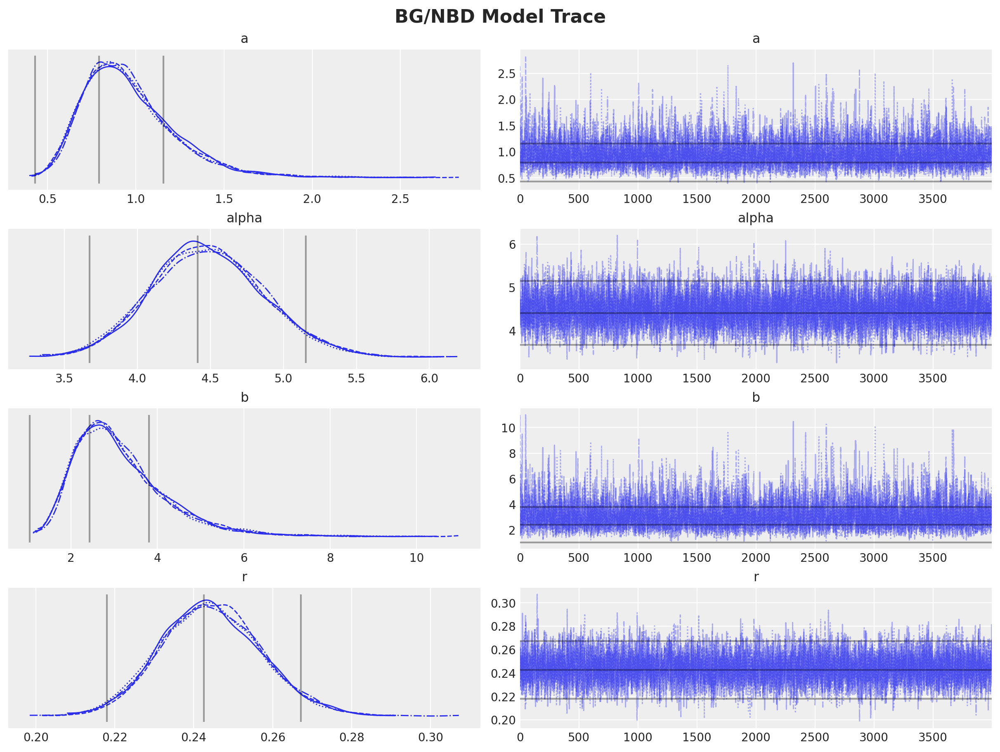
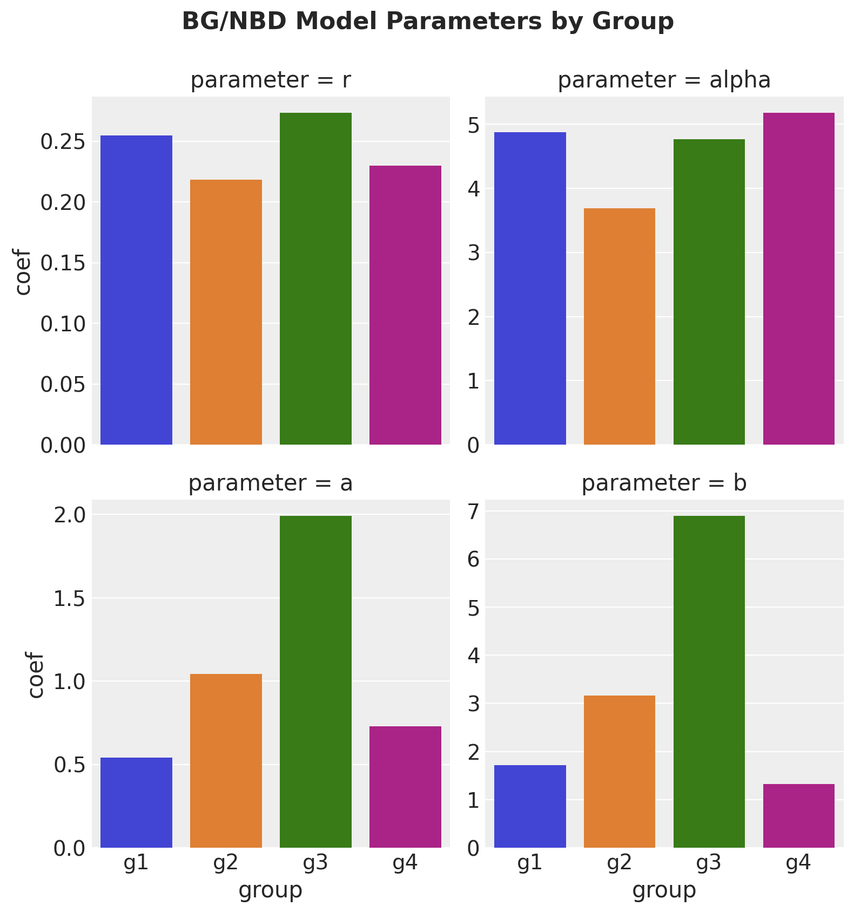
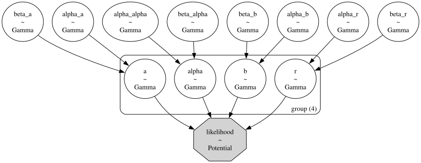
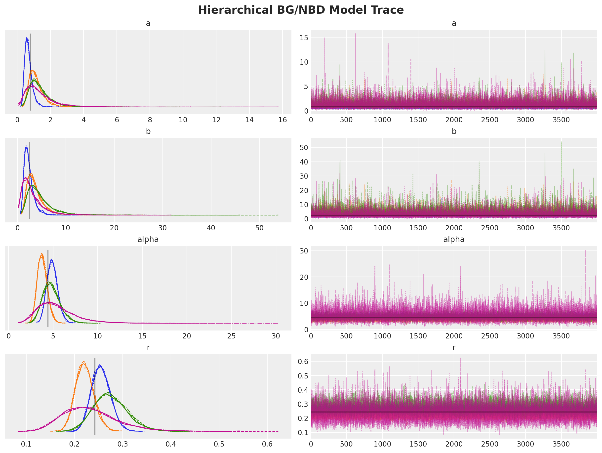
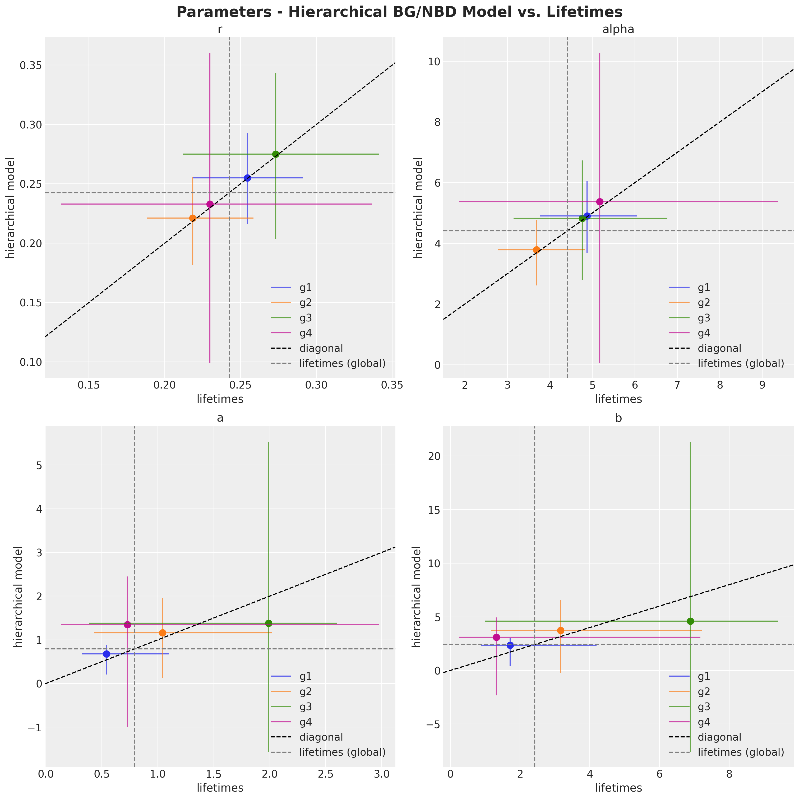

Hierarchical Customer Lifetime Value Models

Executive Summary
This post explores the application of hierarchical Bayesian models to Customer Lifetime Value (CLV) prediction, offering significant improvements over traditional methods. Key takeaways include:
Hierarchical models address limitations in handling seasonality and cohort differences that challenge conventional CLV models.
These advanced models provide more stable and accurate predictions, especially for new or small customer cohorts.
By balancing individual cohort behavior with overall population trends, hierarchical models offer a more nuanced understanding of customer value.
Implementation of these models can lead to more informed business decisions, better resource allocation, and improved customer strategies.
We demonstrate the practical application and benefits using the
CDNOWdataset and the BG/NBD model as examples.
For businesses looking to enhance their CLV modeling capabilities, hierarchical Bayesian models represent a powerful tool for gaining deeper, more actionable customer insights.
Introduction
In our previous exploration of customer lifetime value (CLV), we introduced the Pareto/NBD model—a flexible approach to predicting CLV. We showcased its modern implementation in PyMC-Marketing, which enables various inference methods, including maximum a posteriori estimation and MCMC techniques. This powerful tool allows us to set custom priors and estimate prediction uncertainty. However, it's just the beginning of what's possible in CLV modeling.
In this blog post, we explore additional benefits of Bayesian analytics. We'll explore how hierarchical models can elevate our CLV predictions, leading to more accurate insights and, ultimately, greater business value.
Let's unpack the ideas, opportunities, and implications of applying hierarchical models to customer lifetime value modeling.
The Challenge: Capturing Complex Customer Behavior
Traditional probabilistic purchase models, like Pareto/NBD and BG/NBD, excel at modeling customer transaction behavior in non-contractual, continuous scenarios (think grocery shopping). These models focus on two key aspects: purchase frequencies and the dropout process. While they can incorporate time-invariant factors like demographics and acquisition channels, they struggle with time-varying elements such as seasonality.
For long-term CLV estimation, seasonal patterns tend to smooth out. However, for mid-term predictions, addressing these patterns becomes crucial. This is where hierarchical models offer a compelling solution.
A Stepping Stone: The Cohort Approach
One practical workaround is to model user cohorts independently. That is, fit one model per cohort. By grouping customers based on their acquisition month, we can partially account for seasonal patterns. This approach involves fitting separate BG/NBD models for each cohort.
While reasonable, this method has limitations:
Model proliferation: The number of models can quickly become unwieldy. Imagine a company with $10$ markets and two years of user data —you're looking at $240$ models, with more added each month.
The cold start problem: How do we model new cohorts with minimal transaction data?
Arbitrary boundaries: Is there a meaningful difference between customers who join on May 31st versus June 1st?
Despite its imperfections, this cohort-based approach often outperforms a one-size-fits-all model. But can we push our analytics further?
Bayesian Hierarchical Models
Bayesian hierarchical models offer a sophisticated framework for tackling complex data relationships. They're particularly valuable when dealing with grouped or nested data structures. These models strike a balance between group-specific estimates and overall population trends, allowing us to:
Pool information across groups
Borrow statistical strength from the entire dataset
Interpolate between pooled and unpooled estimates
The result? More stable and reliable predictions, especially when dealing with varying group sizes or limited data.
In our CLV context, we can view cohorts as members of a global customer population, making them prime candidates for hierarchical Bayesian analysis.
A Practical Example
Let's illustrate these concepts using the classic CDNOW dataset and the BG/NBD model. Without going into details,
when fitting this model, we are trying to estimate four parameters: $r$, $\alpha$, $a$, and $b$. Once we know these
parameters, we can derive many exciting insights like the number of future purchases per user or the probability of
being active; for more details, see the example notebook
in the PyMC-Marketing documentation page. Here is a simple diagram of our model:
Here's a simplified diagram of our model:

Using PyMC-Marketing, we can fit this model and visualize the posterior distributions of our four parameters:

Now, for the sake of illustrating the grouping challenge, let's segment our users into four groups (e.g., different cohorts) with varying sizes:
g1 1065 g2 815 g3 353 g4 124 Name: group, dtype: int64
Notice how group four is significantly smaller than groups one and two.
When we fit individual BG/NBD models for each group, we get these estimates:

The volatility in estimates for the smaller groups (especially for parameters $a$ and $b$) is concerning. This instability could lead to unreliable CLV predictions for new or small cohorts.
The Hierarchical Model Solution
To address this issue, we can implement a hierarchical structure. We'll assume the parameters for each group are drawn from a global prior distribution:

This approach allows us to regularize parameter estimation by sharing information across groups. Let's examine the results:

We now have four posterior distributions (one per group) that cluster more closely around the global estimate (shown in gray).
To visualize the impact, let's compare three approaches:
Global BG/NBD model (pooled)
Individual group models (unpooled)
Hierarchical model

The hierarchical model estimates show less volatility than the individual models while centering around the global mean. This "shrinkage" effect is a hallmark of Bayesian hierarchical models, leading to more robust and reliable inferences —especially valuable when dealing with sparse data or multi-level parameter estimation.
Conclusion: Elevating CLV Predictions
By applying hierarchical Bayesian methods to classic probabilistic CLV models, we've unlocked a more robust approach to customer value estimation. This technique is particularly powerful for addressing seasonality effects across different customer cohorts, resulting in more accurate and actionable CLV predictions.
These advanced statistical methods empower businesses to:
Gain deeper insights into customer behavior patterns
Make more informed, data-driven decisions
Optimize strategies for customer acquisition and retention
As you look to enhance your CLV modeling capabilities, consider exploring the potential of hierarchical models. They offer a sophisticated yet practical way to turn the challenges of seasonality and cohort relationships into opportunities for more precise customer analytics.
This example was based on the original blog post BG/NBD Model in PyMC.
Appendix: Latent Beta Distribution of the BG/NBD Model
For those interested in the technical details, setting priors for the latent Beta distribution in the BG/NBD model requires some finesse. Here is an approach that has proven effective in practice, inspired by this PyMC discourse post and implemented in Colt Allen's btyd package a predecessor of PyMC-Marketing:
Setting priors on the latent Beta distribution in the BG/NBD model:
# Hierarchical pooling of hyperparams for beta parameters. phi_prior = pm.Uniform( "phi", lower=self._hyperparams.get("phi_prior_lower"), upper=self._hyperparams.get("phi_prior_upper"), ) kappa_prior = pm.Pareto( "kappa", alpha=self._hyperparams.get("kappa_prior_alpha"), m=self._hyperparams.get("kappa_prior_m"), ) # Beta parameters. a = pm.Deterministic("a", phi_prior * kappa_prior) b = pm.Deterministic("b", (1.0 - phi_prior) * kappa_prior)
Work with PyMC Labs
If you are interested in seeing what we at PyMC Labs can do for you, then please email info@pymc-labs.com. We work with companies at a variety of scales and with varying levels of existing modeling capacity. We also run corporate workshop training events and can provide sessions ranging from introduction to Bayes to more advanced topics.